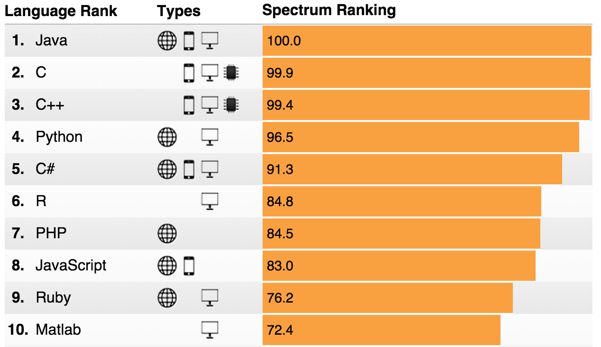
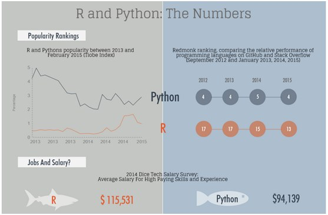
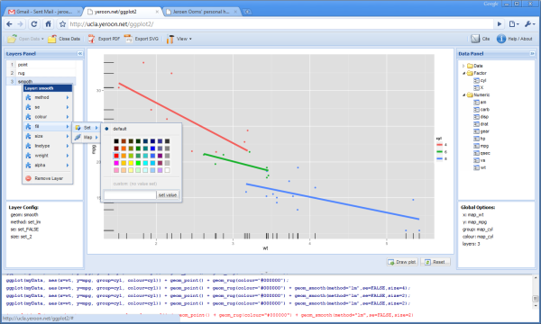
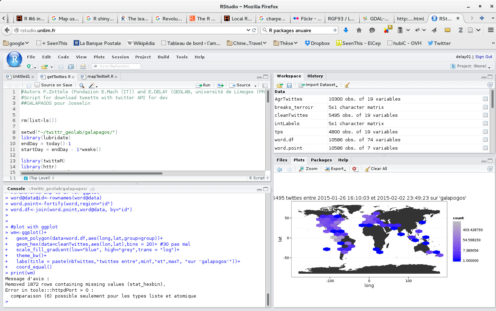

R Project for Statistical Computing
Présentation par Etienne DELAY / @ElCep
Background
R c'est quoi?
- Un projet GNU développé par John Chambers et al. au sein du "Bell Lab" (1993)
- Logiciel libre pour le calcul statistique et graphique
- Un langage de programation fonctionnel, écrit initialement en C et Fortran.
R un langage ?
- R est un langage fonctionnel
- R est un langage interprété
- R est un langage orienté objet
Pourquoi utiliser R ?
- Multi-platforme (Windows, Mac OS, Linux, BSD, etc.)
- Analyse statistique "au vol"
- Des fonctions mathématiques et des modules graphiques embarqués
- Un usage modulaire par packages (6 789 (le 18 juin 2015))
- Libre et ouvert !!!
R un épiphénomène ?
- 6e Langage le plus utilisé au monde en 2015 selon IEEE Spectrum
- Particulièrement utilisé par les data science (c.f. Kaggle)
- Un langage pour l'entreprise aussi
|  |  |
Un support commercial
- Depuis 2007, Revolution R (Microsoft) propose un support comercial
- R est utilisé par les acteurs du Big Data : Apache Hadoop, Oracle Enterprise, etc.
R à proprement parler
Une architecture particulière
- Un noyau : R-base (version 3.2.1 (2015-06-18) -- "World-Famous Astronaut")
- Des packages sur le CRAN : The Comprehensive R Archive Network
Je sais ce que vous vous dites!
Des IDE
On cherchera à faciliter l'utilisation avec un IDE (Integrated Development Environment)
Des packages
Avec R, ou trouve une architecture modulable. Avec l'installation de base, on aura une utilisation de base qu'on agrémentera des packages. Pour cela on pourra procéder à l'installation directement dans R :
install.packges("ggplot2")Mais la plupart des IDE propose aussi une interface graphique
La liste des 5 packages les plus téléchargés (2015) :
- Rcpp : C# integration in R
- ggplot2 : An implementation of the Grammar of Graphics
- plyr : Tools for splitting, applying and combining data
- colorspace : Color Space Manipulation
- stringr : Make it easier to work with strings
Du développement Web
Développement de rApache et Shiny deux solutions pour utiliser R pour le web processing et le web. Un web service à l'université
Pour aller plus loins ...
Pour notre plus grand plaisir :
- On peut rédiger presque automatiquement des rapport avec LaTeX et R
- Faire des présentations en R et Markdown
Bref tout est possible !

Permiers pas avec R
demander de l'aide à R
??read
?read
help("read.csv")

Lire un fichier de données
read.table("mon_fichier.txt", header = TRUE, sep = ",")
read.csv("mon_fichier.txt", header = TRUE, sep = ",")
Les fonctions read sont très puissantes, on peut appeler des données directement en ligne
read.table("https://www.google.org/flutrends/about/data/flu/data.txt", skip = 11, header = TRUE, sep = ",")
Premières notions de variables
Est un langage orienté objet. Tout est donc objet; qu'est ce que ça veux dire ?
Il faut organiser ses données pour pouvoir les retrouver
data.df = read.table("https://www.google.org/flutrends/about/data/flu/data.txt", skip = 11, header = TRUE, sep = ",")
data.df <- read.table("https://www.google.org/flutrends/about/data/flu/data.txt", skip = 11, header = TRUE, sep = ",")
Des règles pour nomer les variables
- Un nom clair
- attention aux noms déjà attribués (data ... pas bien)
Les types de données
Dans R le typage est dynamique, ce qui veux dire que R va essayer de faire ce qu'il peut avec vos données
Plusieurs moyens de connaître le type de données
typeof(data.df$Date)
str(data.df)
Merci de votre attention


Vous pouvez retrouver cette présentation sur GitHub : http://unil.im/hOUnL
Présentation réalisée avec reveal.js Crédit photo : Thomas Misnyovszki on Flick'r